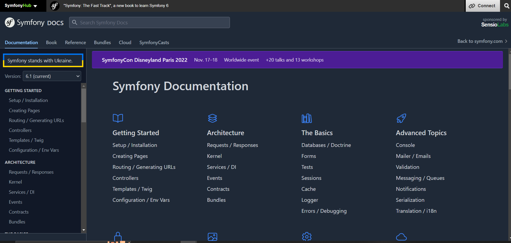
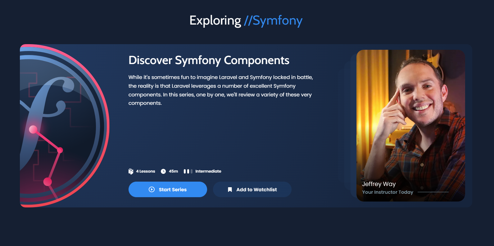
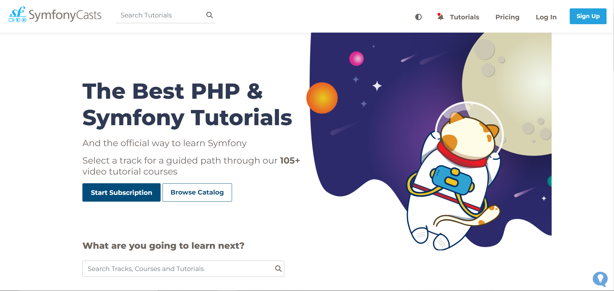
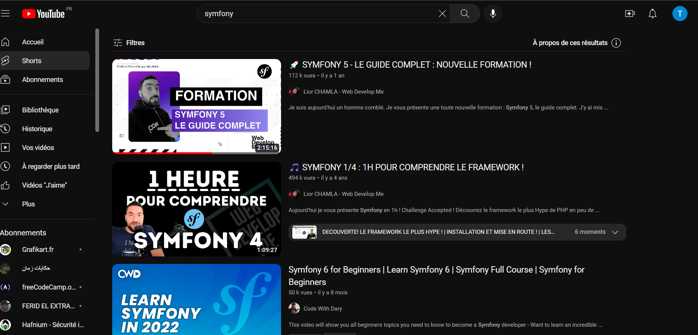

Définition
Le principal avantage de la Veille Technologique est d'identifier ou de prévoir les innovations dans les business units. Les ressources de la veille technologique constituent des informations stratégiques importantes pour anticiper, développer et exploiter les inventions. La mise en place d'une observation technique permanente dans une zone définie peut répondre à plusieurs objectifs. Cela jette les bases pour identifier et comprendre les informations clés sur les concurrents et les technologies. C'est une méthode de collecte d'informations stratégiques sur les concurrents et leurs innovations.
THÉMATIQUE CHOISIE
- Framework Symfony
- 
- L'agence web française SensioLabs est à l'origine du framework Sensio Framework. À force de toujours recréer les mêmes fonctionnalités de gestion d'utilisateurs, gestion ORM, elle a développé ce framework pour ses propres besoins. Comme ces problématiques étaient souvent les mêmes pour d'autres développeurs, le code a été par la suite partagé avec la communauté des développeurs PHP.
Qu’est-ce que framework Symfony ?
- Symfony est un framework PHP open source avec une architecture MVC. C’est l’un des framework les plus populaires parmi la communauté des développeurs open source. Il est utilisé pour construire des applications web complexes et performantes.
- l existe d’autres frameworks PHP tels que Zend, Cake PHP, Codeigniter, Laravel mais Symfony a un avantage compétitif sur les autres dans de nombreux aspects du développement d’applications web.
- L’idée de base du framework Symfony est de supprimer le codage fastidieux et de gagner du temps dans le développement. Il est basé sur une philosophie de création de logiciels par les utilisateurs pour leurs propres besoins. Les développeurs peuvent ajouter des modules supplémentaires à mesure que le produit se développe. Il facilite la vie du développeur grâce à des composants de frameworks facilement disponibles et à une configuration haut de gamme. Tirant le meilleur parti de PHP5, Symfony Framework est le squelette de votre application. Il définit le style et l’architecture de votre produit.
Quelles sont les avantages de Symfony ?
Grande flexibilité
- Symfony est l’un des frameworks PHP les plus riches en fonctionnalités. Les deux avantages technologiques les plus remarquables de Symfony sont les bundles et les composants.
- Le bundle est presque la même chose qu’un plugin. Considérez-le comme un ensemble de fichiers (fichiers PHP, feuilles de style, JavaScripts, images) pour la mise en œuvre d’une fonctionnalité (par exemple, un blog, un panier d’achat, etc.). Le principal avantage des bundles est qu’ils sont découplés. Vous pouvez les reconfigurer et les réutiliser pour de nombreuses applications afin de réduire le coût global de développement.
- Les composants sont des fonctionnalités génériques qui réduisent les tâches de routine et permettent aux développeurs de se concentrer sur des fonctionnalités métier spécifiques. Il existe 30 composants Symfony utiles qui facilitent le processus de développement. Vous pouvez utiliser les composants de manière indépendante et ajouter vos propres modules personnalisés sans que l’architecture en pâtisse. Les composants Symfony peuvent également être utilisés de manière autonome dans d’autres frameworks (par exemple, Laravel) ou dans des solutions PHP simples.
- Les bundles et les composants permettent d’éliminer les dépendances strictes dans l’architecture. Moins vous avez de dépendances, plus il sera facile d’apporter des changements sans risquer de casser d’autres parties du système. Ainsi, vous pouvez adapter la solution à toutes les exigences et à tous les scénarios d’utilisateur pour créer une application hautement flexible.
Personnalisation
- Symfony offre de grandes caractéristiques et fonctionnalités de personnalisation pour les développeurs et les entreprises. Vous pouvez rendre votre application aussi orientée utilisateur que vous le souhaitez. Il dispose d’une architecture de service OOPS avancée pour faire évoluer les projets.
Symfony propose 3 types de personnalisation
- Full stack – Développez un produit complexe avec de multiples fonctionnalités.
- Brique par brique – Si vous voulez des fonctionnalités spécifiques basées sur vos besoins qui ne nécessitent pas le framework entier. Vous pouvez construire votre propre framework personnalisé et développer une application avec des fonctions sélectives limitées
- Micro framework – Si vous avez besoin d’une fonctionnalité spécifique dans votre application, qui ne nécessite pas le framework entier. Vous pouvez encore le faire avec Symfony 2. Utilisez une caractéristique particulière pour développer une fonctionnalité définie. Il est constitué de briques qui peuvent être utilisées séparément
ressources utilisé
- Afin de développer cette veille j'ai effectué des recherches sur de nombreux Sites :
- 
- J'ai suivis une formation sur le site SymfonyCasts pour apprendre l'utilisation du Symfony :
- 
- J'ai aussi suivis une formation sur Youtube pour apprendre l'utilisation du Symfony :
- 
Les points Forts de ma veille :
- les informations sont quasiment tous utiles et de qualités
- le flux d’information est très élevé
- Facile d’utilisation et rapide d’accès
- Bonne Organisation et très bonne méthologie de travail
Les points faibles de ma veille :
- Trop d’informations , difficiles de tout lire et surtout trié
- Beaucoup d’informations se ressemblent et sont identiques
Conclusion
- Un framework a pour but de simplifier et d’accélérer le processus de développement. Symfony est un framework PHP puissant et robuste.
- Les projets créés avec cette plateforme sont hautement extensibles en raison de l’architecture modulaire. L’utilisation de bundles et de composants en fait une solution brillante pour les sites Web et les applications de toute taille et complexité. Bien qu’il ne soit pas facile de l’apprendre, on peut toujours trouver une bonne documentation, des cours officiels et le soutien de la communauté.
- La vitesse et les performances ne sont pas les points forts de Symfony. Mais les codeurs expérimentés peuvent surmonter les problèmes qui peuvent survenir avec des applications très chargées. Quel que soit le framework que vous choisissez, n’oubliez pas que ce n’est qu’un outil. Le succès dépend du fait que le développement soit entre de bonnes mains ou non.